Casein Fluorescent Walkthrough
this is a walkthrough of using the model to analyze a fluorescent video of beads diffusing in a casein solution that is freezing in time
Import modules
[1]:
import os
os.environ["KMP_DUPLICATE_LIB_OK"] = "TRUE"
import numpy as np
import xarray as xr
import torch
import yaml
import pickle
import matplotlib
from matplotlib import pyplot as plt
from matplotlib import axes as ax
import sys
sys.path.append("C:\\Users\\svc-scst291lab\\Downloads\\PyDDM-main\\PyDDM-main\\PyDDM")
import ddm_analysis_and_fitting as ddm
import utils_cnn
from utils_cnn import setup_nn, set_seed, one_time_cost, CorrDataSet #, CorrDataSet_noshuffle
from train_and_test import train_autoencoder
from torch.utils.data import DataLoader
import os
from os import path
import pathlib
from pathlib import Path
import UsingNetwork
Loading Model
[2]:
with open("C:\\Users\\svc-scst291lab\\Documents\\GitHub\\Testing-CNN\\CNN Classes\\js_test 7_10 NA_CS_7k-8k_12k-13k_mod_9\\trainer_mod_number_9.pkl", "rb") as f:
trainer = pickle.load(f)
#put the yml location of the files that you wanted to test through the model
trainer.yml_location = "C:\\Users\\svc-scst291lab\\Documents\\GitHub\\Testing-CNN\\CNN Classes\\js_test 7_10 NA_CS_7k-8k_12k-13k_mod_9\\yml_files_fluorescent_substack\\"
implementer = UsingNetwork.TestModel(trainer.yml_location)
implementer.recover_ddm_metadata()
[3]:
trainer.final_location
[3]:
'C:\\Users\\svc-scst291lab\\Documents\\GitHub\\Testing-CNN\\CNN Classes\\Training lr_0.001_latent_space_16_batchsize_2_cv_10_10_k_1_1_wd_0\\training_output\\autoencoder2d_best_lr_0.001_latent_space_16_batchsize_2_cv_10_10_k_1_1_wd_0_mod_number_9'
[4]:
trainer.final_location = 'C:\\Users\\svc-scst291lab\\Documents\\GitHub\\Testing-CNN\\CNN Classes\\js_test 7_10 NA_CS_7k-8k_12k-13k_mod_9\\training_output\\autoencoder2d_best_lr_0.001_latent_space_16_batchsize_2_cv_10_10_k_1_1_wd_0_mod_number_9'
[5]:
implementer.use_model(trainer.final_location)
fluorescent_substack_validation.torch
C:\Users\svc-scst291lab\Documents\GitHub\Testing-CNN\CNN Classes\js_test 7_10 NA_CS_7k-8k_12k-13k_mod_9\torch_data\validation\fluorescent_substack_output.torch
diffusion coeffieicient as function of frames
[ ]:
file_list = ['fluorescent_substack.yml']
implementer.get_diffusion(q_range = [21,30], files = file_list)
displaying diffusion coefficient
[12]:
diff_coeff_full = [0.03836, 0.042,0.03121,0.02953,0.03054,0.03017,0.0291,0.02921,0.02449,0.02923,0.02565,0.02215,0.02682,0.02117,0.02058,0.02397,0.02222,0.0234,0.02172,0.01779]
[103]:
yml_file = '1-20000-6_substack.yml'
numBins = 20
minVal = 0.09
maxVal = 2.2
binTest = np.arange(minVal ,maxVal, (maxVal- minVal)/numBins)
plt.figure()
plt.hist(implementer.diff_coeffs_dict[yml_file]['data'][:i,0],color='tab:orange', alpha=0.3, bins=binTest, label='Raw Data')
plt.hist(implementer.diff_coeffs_dict[yml_file]['output'][:i,0], color='tab:blue', alpha=0.3, bins=binTest, label='ML')
plt.axvline(0.152*6, linewidth = 3, color='g')
plt.xlabel("Diffusion Coefficient")
plt.title("0-583 frames")
plt.legend()
########################################
plt.figure()
plt.hist(implementer.diff_coeffs_dict[yml_file]['data'][i:2*i,0],color='tab:orange', alpha=0.3, bins=binTest, label='Raw Data')
plt.hist(implementer.diff_coeffs_dict[yml_file]['output'][i:2*i,0], color='tab:blue', alpha=0.3, bins=binTest, label='ML')
plt.axvline(0.152*6, linewidth = 3, color='g')
plt.xlabel("Diffusion Coefficient")
plt.title("583-1166 frames")
plt.legend()
##########################################
plt.figure()
plt.hist(implementer.diff_coeffs_dict[yml_file]['data'][2*i:3*i,0],color='tab:orange', alpha=0.3, bins=binTest, label='Raw Data')
plt.hist(implementer.diff_coeffs_dict[yml_file]['output'][2*i:3*i,0], color='tab:blue', alpha=0.3, bins=binTest, label='ML')
#plt.axvline(0.152*6, linewidth = 3, color='g')
plt.xlabel("Diffusion Coefficient")
plt.title("1166-1749 frames")
plt.legend()
###############################################
plt.figure()
plt.hist(implementer.diff_coeffs_dict[yml_file]['data'][3*i:4*i,0],color='tab:orange', alpha=0.3, bins=binTest, label='Raw Data')
plt.hist(implementer.diff_coeffs_dict[yml_file]['output'][3*i:4*i,0], color='tab:blue', alpha=0.3, bins=binTest, label='ML')
#plt.axvline(mean_target_4, linewidth = 3, color='g')
plt.xlabel("Diffusion Coefficient")
plt.title("1749-2332 frames")
plt.legend()
[103]:
<matplotlib.legend.Legend at 0x2c807890b20>
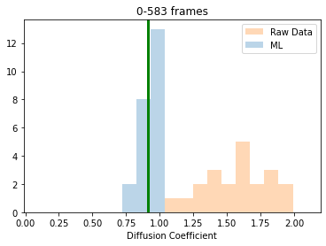
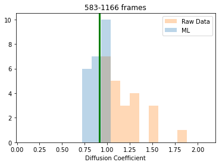
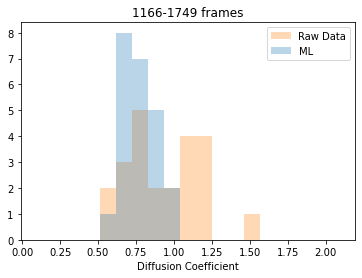
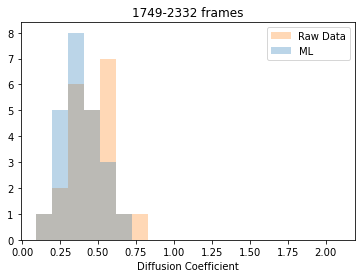
[12]:
frames = np.arange(0,(5000/3)-50,25)
print("shape of frames: ", frames.shape)
#framesFull = np.arange(0,20000, 1000)
shape of frames: (65,)
[13]:
full = [0.264, 0.1911, 0.139, 0.01599, 0.0336]
[14]:
full_adj = np.multiply(full, 3)
[15]:
full_frames= np.arange(0,5000,1000)
[58]:
yml_file1 = "fluorescent_substack.yml"
plt.semilogy(frames[:50], implementer.diff_coeffs_dict[yml_file1]['data'][:50,0], 'o', color='tab:blue', ms=10, alpha=0.5,label='Raw 50')
plt.plot(frames[:50], implementer.diff_coeffs_dict[yml_file1]['output'][:50,0], 'o', color='tab:orange', ms=10, alpha=0.5,label='ML 50')
plt.plot((full_frames[2:4]+500)/3, full_adj[2:4], 'rs', ms=10, alpha=0.75,label='Full 1000')
plt.axhline(y = 0.59, linewidth = 5, xmin = 0.05, xmax = 0.56, color = 'r', label = "Full DDM over first 1000 frames")
plt.xlabel("frames")
plt.ylabel("diffusion coefficient")
plt.title("fluoresecent substack")
plt.legend(fontsize=10)
[58]:
<matplotlib.legend.Legend at 0x25aa2ff7400>
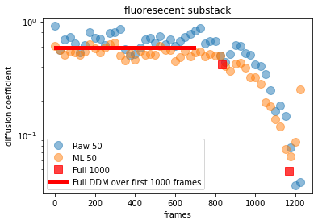
Test fits on set of 50 frames
[6]:
networkOut = 'C:\\Users\\svc-scst291lab\\Documents\\GitHub\\Testing-CNN\\CNN Classes\\js_test 7_10 NA_CS_7k-8k_12k-13k_mod_9\\network_output\\'
[12]:
param = """
DataDirectory: './'
FileName: 'null'
Metadata:
pixel_size: .325
frame_rate: 25
Analysis_parameters:
number_lag_times: 40
last_lag_time: 600
binning: yes
bin_size: 2
use_windowing_function: yes
Fitting_parameters:
model: 'ISF - Single Exponential - NonErgodic'
Tau: [1, 0.001, 10000]
StretchingExp: [1.0, 0.3, 1.5]
Amplitude: [1e2, 1, 1e12]
NonErgodic: [0.05, 0.001, 0.3]
Background: [100, 0, 100]
Good_q_range: [18, 30]
Auto_update_good_q_range: False ########################
"""
#parameters_as_dictionary = yaml.safe_load(ddm_analysis_parameters_str)
[13]:
#the number that goes after raw is the beginning frame of the set of 50 frames that you're analyzing
fitraw01, (qmin,qmax) = implementer.fit_ddm('Z:\\JJ\\Machine Learning\\Machine Learning 2023\\ISF\\Fluorescent 1508\\fluorescent_substack_raw_175','fluorescent_substack.yml', qrange=[21,30], meta_data = param, return_fit=True)
not none
| Initial guess | Minimum | Maximum | |
|---|---|---|---|
| Tau | 1.00 | 0.001 | 10000.0 |
| StretchingExp | 1.00 | 0.300 | 1.5 |
| NonErgodic | 0.05 | 0.001 | 0.3 |
File ./_ddmmatrix.nc not found.
Perhaps you meant to load one of...
.\fluorescentframe1950.nc
By default, loading .\fluorescentframe1950.nc
In function 'get_tau_vs_q_fit', using new tau...
Fit is saved in fittings dictionary with key 'fit01'.
First D = 0.8283
In function 'get_tau_vs_q_fit', using new tau...
In hf.plot_one_tau_vs_q function, using new tau...
First D = 0.9890
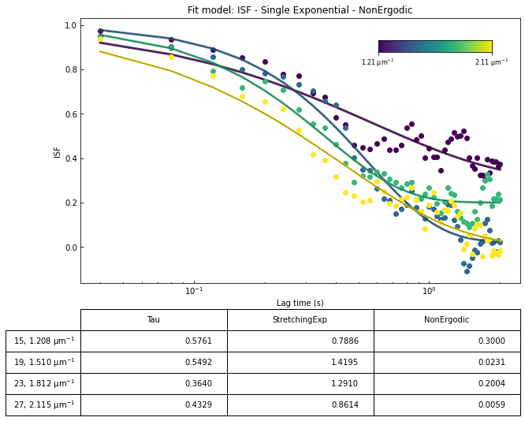
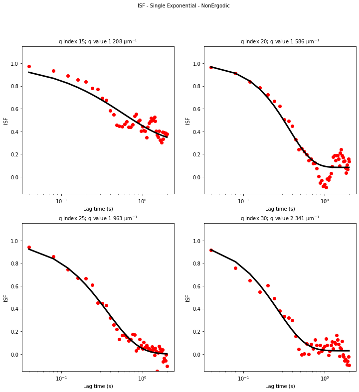
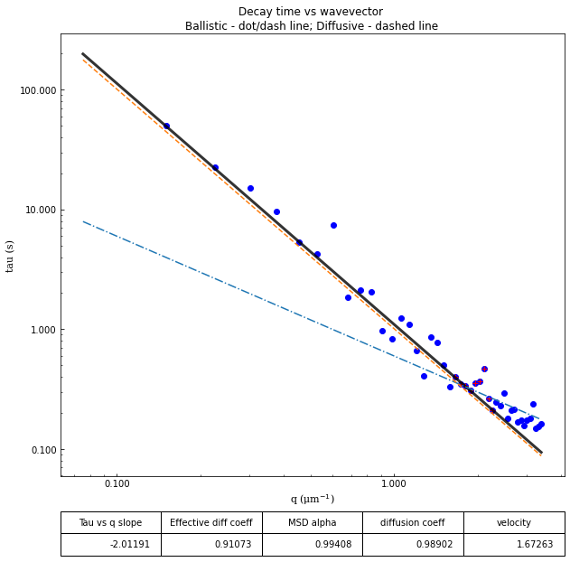
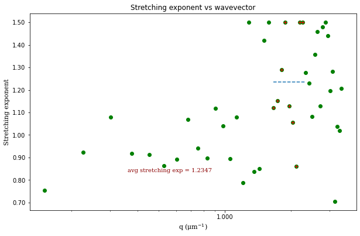
_Testing_model_-_mod_9_fluorescent_1508_substack_22_7.png)
_Testing_model_-_mod_9_fluorescent_1508_substack_22_8.png)
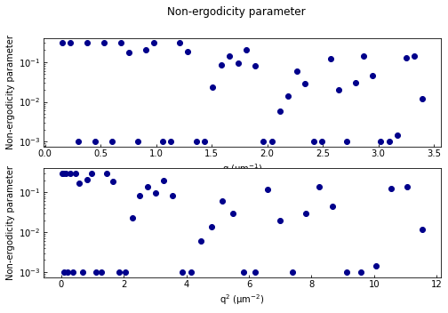
[ ]:
#the number that goes before modeloutput is the beginning frame of the set of 50 frames that you're analyzing
fitoutput01, (qmin, qmax) = implementer.fit_ddm(networkOut + 'fluorescent_substack_175_modeloutput','fluorescent_substack.yml', qrange=[21,30], return_fit=True)
[ ]:
diff_raw_lst = []
diff_ml_lst = []
for i in range(25):
fitraw01, (qmin,qmax) = implementer.fit_ddm('Z:\\JJ\\Machine Learning\\Machine Learning 2023\\ISF\\Fluorescent 1508\\fluorescent_substack_raw_' + str(i*25),'fluorescent_substack.yml', qrange=[21,30], return_fit=True)
fitoutput01, (qmin, qmax) = implementer.fit_ddm(networkOut + 'fluorescent_substack_' + str(i*25)+'_modeloutput','fluorescent_substack.yml', qrange=[21,30], return_fit=True)
diff_raw = np.array(1/(fitraw01.parameters.loc['Tau'][15:-6] * fitraw01.q[15:-6] * fitraw01.q[15:-6]))
diff_ml = np.array(1/(fitoutput01.parameters.loc['Tau'][15:-6] * fitoutput01.q[15:-6] * fitoutput01.q[15:-6]))
convert_raw_lst = []
convert_ml_lst = []
convert_raw_lst = diff_raw.tolist()
diff_raw_lst.extend(convert_raw_lst)
convert_ml_lst = diff_ml.tolist()
diff_ml_lst.extend(convert_ml_lst)
[8]:
plt.figure()
numBins = 13
minVal = 0.30
maxVal = 1.4
bins = np.arange(minVal ,maxVal, (maxVal- minVal)/numBins)
plt.hist(diff_raw_lst, bins=bins, color = 'tab:orange', alpha=0.3, label = "Raw")
plt.hist(diff_ml_lst, bins = bins, color = 'tab:blue', alpha = 0.3, label = "ML")
plt.axvline(x = 0.59, color = 'green', label = 'target')
plt.xlabel("diffusion coeff")
plt.ylabel("counts")
plt.legend(fontsize= 10)
#plt.hist(diff_output_lst, bins=8, color='b', alpha=0.3)
[8]:
<matplotlib.legend.Legend at 0x1fa1348a490>
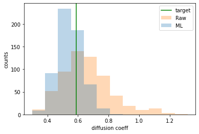
analyzing the input v output of those set of 50 frames
[18]:
fig,ax = plt.subplots(figsize=(8,8))
plt.matshow(fitraw01.isf_data, fignum=0,vmin=-0.1, vmax=1.0)
#plt.colorbar()
q_indices = [9,19,29,39]
ax.set_xticks(q_indices)
q_labels = []
for qindex in q_indices:
q_labels.append("%.1f" % fitraw01.q[qindex])
ax.set_xticklabels(q_labels)
lagtimes_frames = np.array([0,10,20,30,40])
ax.set_yticks(lagtimes_frames)
time_labels = lagtimes_frames/25.0
ax.set_yticklabels(time_labels)
ax.xaxis.set_ticks_position('top')
ax.xaxis.set_label_position('top')
ax.set_xlabel("Wavevector, $q$ ($\mu$m$^{-1}$)", fontsize=28)
ax.set_ylabel("Lag time, $\Delta t$ (s)", fontsize=28)
ax.tick_params(direction='out', which='both', labelsize=28)
plt.savefig("ISFs_0.5percent_qdt_raw.png", bbox_inches ='tight', dpi=300)
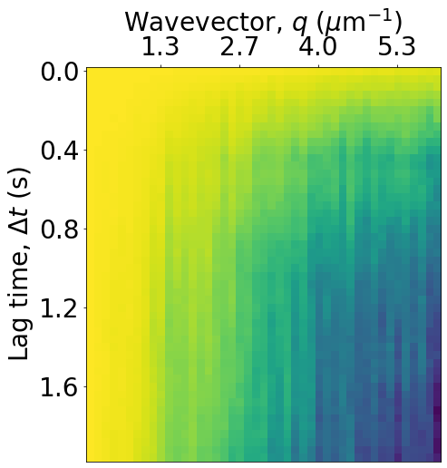
[14]:
fig,ax = plt.subplots(figsize=(8,8))
plt.matshow(fitoutput01.isf_data, fignum=0,vmin=-0.1, vmax=1.0)
#plt.colorbar()
q_indices = [9,19,29,39]
ax.set_xticks(q_indices)
q_labels = []
for qindex in q_indices:
q_labels.append("%.1f" % fitoutput01.q[qindex])
ax.set_xticklabels(q_labels)
lagtimes_frames = np.array([0,10,20,30,40])
ax.set_yticks(lagtimes_frames)
time_labels = lagtimes_frames/25.0
ax.set_yticklabels(time_labels)
ax.xaxis.set_ticks_position('top')
ax.xaxis.set_label_position('top')
ax.set_xlabel("Wavevector, $q$ ($\mu$m$^{-1}$)", fontsize=28)
ax.set_ylabel("Lag time, $\Delta t$ (s)", fontsize=28)
ax.tick_params(direction='out', which='both', labelsize=28)
plt.savefig("ISFs_0.5percent_qdt_raw.png", bbox_inches ='tight', dpi=300)
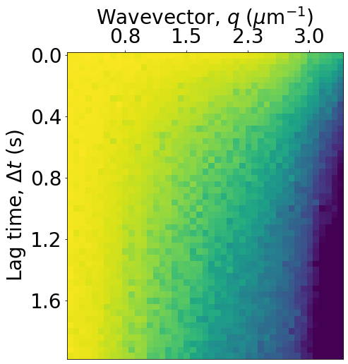
[16]:
#looking at the isf of raw v model
#plt.plot(fitraw01.isf_data[:,30], label = "raw")
plt.plot(fitoutput01.isf_data[:,30], label = "model")
plt.legend(fontsize=20)
[16]:
<matplotlib.legend.Legend at 0x19a20e2c9a0>
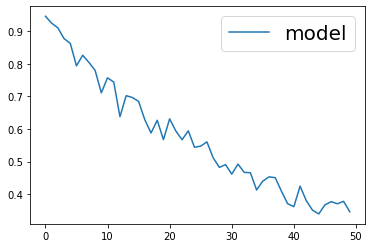